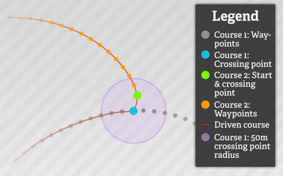
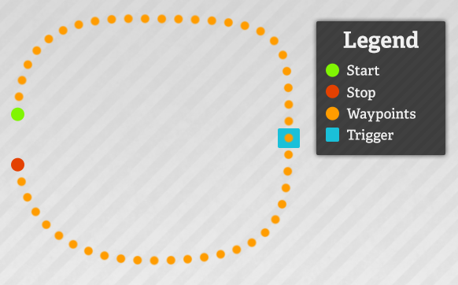
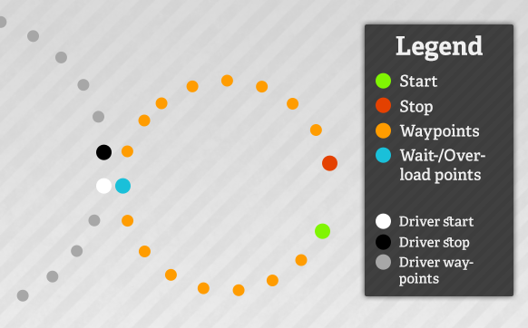
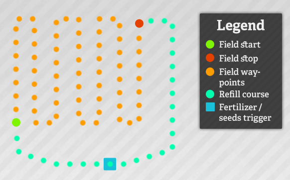
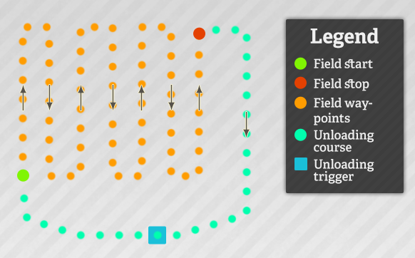
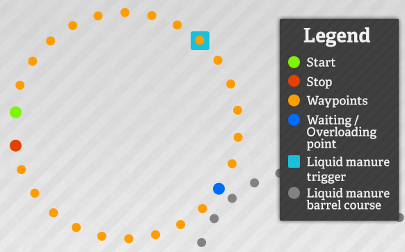
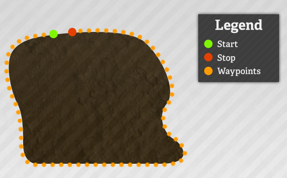

In general, controlling Courseplay works with the mouse, due to free keys in Farming Simulator are rather rare. By using the right mouse button the Courseplay hud, where you can configure the drivers, is activated. In addition, a couple of functions like starting and stopping the driving are available for the keyboard, by using the keys CTRL+KP 7 through CTRL+KP 9. In the hud you can switch the opening/closing the hud to using the keyboard (default: CTRL+DELETE).
HUD
When opening the hud, the mouse controls are activated automatically. Meaning, you can not use the mouse to look around anymore. In order to deactivated the mouse controls, you need to click the right mouse button again. Alternatively you can click on the x in the upper right corner of the hud. Doing so closes the hud and deactivates the mouse controls.
The hud is divided into multiple pages. You can navigate through those by using the left/right arrows ‹/› in the hud's upper section. In the center section on each page, a multitude of settings and options can be set and commands be given, simply by clicking on the chosen action or its corresponding buttons (+/-/‹/›) with the left mouse button. Certain values and settings like scrolling through the course list, the settings of widths, speeds oder percentages etc. can be altered in bigger steps by pressing the CTRL key while clicking on the buttons.
In the bottom part of the hud you'll find information about the driver, the loaded course and the current status. Also in that section, you can save the current course by clicking .
HUD: Driver controls
Start recording
With this option, Courseplay's recording mode is activated. You can drive and record the course that the driver should use later. Upon activating, three eggs at an interval of ca. 10 to 20 m will be displayed at the start. You should make sure to go more or less straight until reaching the third egg (third waypoint).
When recording is active, you can deactivate mouse controls by clicking the right mouse buttons, so you can look around while driving and recording.
Pause recording
While recording you can pause the recording with this option. A yellow arrow will be display, showing the direction to the last waypoint. In addition, while paused you can delete the last waypoints, respectively.
Stop recording
This option is only available during recording. When reaching the end point of your route, use "stop recording". It is advised to have the end point ca. 5 to 10 m before the start point, and for it to have about the same direction as the start point. Meaning: don't stop at a south direction while the course's start direction is north.
Set waiting point
While recording, you have the possibility to set waiting points on the course. At those points, the driver, while driving the course, will stop and wait until either you tell him to continue, or the configured waiting time has passed. When a driver reaches a waiting point, a message will be displayed (XYZ has reached waiting point.).
Set crossing point
Crossing points are "signal" or "combination points" where two seperate courses can be combined (see Manage courses). In both courses, two crossing points (one in each course) that are closer to each other than 50 metres are determined. The combined course will lead up until the first course's crossing point, and from there go the second course from its respective crossing point.

Fig. 1: Combination of two course at crossing points
Note: A course's start and stop points are automatically set as crossing points. Hence, they don't have to be manually declared as those when recording.
Drive course
When you have recorded or loaded a course, you can "hire" a driver to have him drive the course. From this moment, you won't have any manual control over the tractor.
Stop driver
Of course you can always stop the activated driver. Later, when reactivating the driver, it will continue from the next valid waypoint.
continue
When a driver has reached a waiting point, you can manually tell him to continue.
Change mode
In order to being able to do many different work types, there are different driving modes. The current mode will be displayed in the bottom section of the hud. By clicking "change mode", you can iterate through the different modes.
The modes' different functions and usages are described further in the Driving modes section.
Delete waypoints
When a course has been recorded or loaded, you can delete the current course selection. The saved course will not be deleted from the save game, only the driver will clear his current course.
In the bottom section of the hud there is a disc icon . After recording a course, you can save it by clicking the disc. In the upper part of the screen a text input will be shown where you can name the course. Confirm with ENTER (Return).
HUD: Manage courses
On this page you'll find an overview containing your saved courses. The list can be scrolled through by using the up/down arrows / near the hud's right edge.
Default change
5 courses
CTRL change
10 courses
Each course has three options, respectively:
Load/Combine
Loading the course. If there already is a course loaded, the clicked course will be combined with the already loaded one at the first common crossing point. In both courses, two crossing points (one in each course) that are closer to each other than 50 metres are determined. The combined course will lead up until the first course's crossing point, and from there go the second course from its respective crossing point.
Fig. 1: Combination of two course at crossing points
Add
If there already is a course loaded, the clicked course will be added at the end of the already loaded course.
Delete
The course will be deleted completely from Courseplay and the save game. It will not be available anymore, not even when loading the game again.
In order to record or load a completely new course, the current course must be cleared. See Driver controls > "Delete waypoints".
HUD: Combi mode settings
Just like the name implies, these settings are for the combi and overload modes. You can configure your driver to be better suited to unload the combine. The values can be changed by clicking the +/- buttons on the right hand side (bigger steps with pressed CTRL key).
Side offset
This value defines the horizontal offset between the driver and the combine/chopper when unloading. Technically, it's the distance between the combine's center and its pipe end. By default it's set to "auto" - the driver calculates the side distance automatically. The value can be changed and set to "manual" by clicking +/-. You can reset it to "automatic" by setting it to 0 (zero).
Default change
0.1 m
CTRL change
0.5 m
Pipe offset
This value defines the vertical offset between the driver's trailer and the combine/chopper when unloading (ahead/behind). This is being used to have the trailer directly underneath the pipe. By default it's set to "auto". In contrast to the side offset or the turning circle, clicking +/- adds to/subtracts from the automatic value. Meaning: e.g. "1 m ahead", "2.5 m back", …. You can reset it to "automatic" by setting it to 0 (zero).
Default change
0.1 m
CTRL change
0.5 m
Turning circle
This value defines the driving tractor's turning circle, which is especially used for turning maneuvers when unloading a combine or chopper. The value, like the side offset, is calculated automatically (based on wheel angle, wheel base, track width, number of trailers), as soon as a driver is hired. It can be changed and set to "manual" by clicking +/-. You can reset it to "automatic" by setting it to 0 (zero).
Default change
1 m
CTRL change
5 m
Start at %
This value defines the combine's fill level percentage that tells the driver to drive to and unload it. When unloading choppers, this value defines when the second unloading driver should join the unloading chain.
Note: if path finding is activated, this value is ignored as long as the combine's pipe is on the fruit side and the combine isn't full.
Default change
5%
CTRL change
10%
Drive on at %
This value defines at which trailer fill level percentage the driver should start to drive the course to the unload point. This can be useful if, e.g., the trailer is 97% full and the driver shouldn't wait 5 more minutes for the next unloading, only to get a measly 3%.
Default change
5%
CTRL change
10%
HUD: Manage combines
These settings are only relevant for the combine mode. You can choose between the driver looking for a combine in need automatically (the default setting), or have a assigned, non-changing combine (manual). If the driver has been assigned manually to a combine, it doesn't have to be on the same field as the combine in order to find it. The driver drives from his start point to the combine, no matter where it is.
This can be useful for big and hilly fields where the automatic assignment doesn't always work. Or for areas which aren't fields, like meadows.
HUD: Speeds
Here you can set how fast your driver should drive. Also, you can choose if a course should be driven with the speed used during the recording, or the maximum speed.
ESLimiter version 3.0 and upwards is supported.
Default change
1 kph / 0.6 mph
CTRL change
5 kph / 3.1 mph
HUD: General settings
Path finding
If path finding is activated (only in combi and overload modes), the driver tries as best as possible not to drive through the fruit.
On the one hand this means that on the way to the combine/chopper he drives around the fruit. On the other hand it means that he won't drive to unload a combine if the combine's pipe is on the fruit pipe. The driver will only start if either the pipe is on the non-fruit side, or the combine is 100% full (ignoring the Start at % setting).
Open Courseplay
You can choose if the hud should be opened when the right mouse button is clicked, or if the keyboard keys should be used instead (default: CTRL+DELETE).
Show waypoints
Choose which course waypoints should be displayed.
Beacon lights
Choose if and when the beacon lights should be activated.
Debug-Level
Should there be any problems with Courseplay, you can set the debug level to limit the depth of error information shown in the log. This is important information for the developers, so they can find and fix errors.
HUD: Drive and work settings
Waiting time
By default, drivers stop and wait at waiting points (except for field work and fertilizing/seeding modes), until the driver is told explicitly to continue (waiting time = 0 sec). When a waiting time has been set (above 0 sec), the driver waits at the waiting point until that set time has passed and then continues automatically. This can be useful for, e.g., a weight station at a BGA.
Default change
5 sec
CTRL change
10 sec
horizontal offset
Only for field work and fertilizing/seeding modes. For some tools it might be import not to drive the course exactly in the center line, but slightly to the right or to the left (e.g. bale collectors). This offset can be set here.
Default change
0.5 m
CTRL change
1 m
vertical offset
Only for field work and fertilizing/seeding modes. Identical to the horizontal offset, only that the driver drivers further ahead/behind the actual course.
Default change
0.5 m
CTRL change
1 m
Work width
Necessary for the course generation. The tool's work width can be set here, from which the course's lane width is calculated.
Default change
0.1 m
CTRL change
0.5 m
HUD: Combine controls
This page is only shown for combines and choppers.
Request driver / Driver requested
Call a driver manually. If a driver has found the combine and is on his way, his name will be displayed.
Start/stop driver
Manually start or stop the current driver. If stopped, the driver will wait until being called to start again.
Send driver home
Manually send the current driver to follow his course. He will drive the course, unload/overload, and drive on to his first waypoint.
Driver side
Only displayed for choppers.
By default, the drivers choose the fitting (non fruit) side to drive by and unload a chopper. With this option you can hard code a side of your choice where they should drive (e.g. when you're threshing a field manually in a spiral).
Driving modes
There are eight different driving modes:
Driving helper
The tractor waits at the first waypoint until his trailer has been filled. This can happen at a silo, at a field edge or anywhere else. As soon as the fill level reaches the set percentage (Drive on at %), the driver starts to drive the course. As soon as he reaches an unloading trigger, he unloads automatically. Afterwards he continues the course to return to the first waypoint.
The last waypoint should be 5 to 10 m ahead of the first, and have somewhat the same direction as the first.

Fig. 1: Start point, waypoints and end points in the driving helper mode
Combi
The combi mode is very similar to the Driving helper mode, in that the tractor drives a course and unloads at a trigger. But, in addition, the driver unloads a working combine or chopper on the field.
The tractor waits at the last waypoint until it has a combine/chopper in reach, and said combine's fill level is above the percentage (Start at %) set for the tractor. Then, the driver drives to the combine, comes from behind, and drives underneath the pipe, where the combine starts to unload into the tractor's trailer. If the trailer isn't full yet (Drive on at %), the tractor turns around and waits in the field for his next unloading operation. As soon as the trailer's fill level is above the Drive on at % percentage, the driver will drive to the course's second waypoint, and from there continue the course, unloading the trailer and returning to the field.
The tractor has two possibilities to have a combine in reach:
The course's first and last waypoint are on the field where the combine is working. Mostly, the driver identifies the combine automatically (if the field isn't too big or too hilly). The driver also identifies multiple combines and assigns himself to the combine that fits best for him (based on distance and the combine's fill level).
The tractor is assigned to one distinct combine (see HUD: manage combines). Only the selected combine will be unloading, none else. In this mode, it doesn't matter if the tractor and the combine are on the same field. The combine can wait outside of the field and still drive to/from the combine.
Overloader
The overloading mode is somewhat similar to the combi mode, in that the driver unloads a combine. But instead of the driving a course to an unloading trigger, the driver overloads into a waiting trailer. As with the combi mode, a combine can be found automatically or set manually.
The course's start point should be in proximity to a waiting trailer (e.g. another tractor in "driver helper" mode). From there, the course must lead to the trailer. When the overloader's pipe is above the waiting trailer (so when it's able to overload), a waiting point needs to be set. Later, while driving the course, this waiting point tells the overloader to stop, extend the pipe, and start overloading. During, an info message XYZ has reached overload point. will be displayed. When the overloader is empty, the driver will continue the course and wait at the last waypoint for his next unloading operation.
After the waiting point, the course needs to extend a little further (away from the trailer), ideally back to the start point.

Fig. 2: Start point, waypoints, waiting/overloading point and stop point in the overload mode
Fertilize and seeding
When fertilizing or seeding, there are two sections: one, the actual work part on the field, and two, the course from the field to the refilling trigger and back to the field.
The field work course can be created in two different ways:
You record the course yourself. It is important that there need to be two waiting points. The first one at the position where the work on the field should start, and the second at the position where the work on the field should end. This work area is absolutely necessary for the correct functioning of this mode.
The course can be generated automatically. For further information, see the Generate course section. The waiting points will be set automatically.
The second part, die automatic refilling, is a regular "A to B" course. It should start at the second waiting point (so, the end of the field work course), the go through the fertilizer/liquid manure/seeding trigger, and back to the field, ending just before the first waiting point of the field work course. As soon as he recognizes a refilling trigger, the driver stops and refills automatically.

Fig. 3: Start point, waypoints, waiting points and stop point in the fertilizer/seeding mode
As soon as the tool is empty, it goes into transportation mode and the driver follows the refilling course. Back at the field, the driver drives to the point on the field where it last stopped work, sets the tool into work mode, and continues working.
Transfer
The transfer mode is the most simple form to get from A to B. It uses a completely regular course with a start and an end point. The driver blindly follows that course, without unloading or other fancy stuff. Reaching the end, the driver returns to the start point and repeats the course. If you want to prevent that, you need to activate the Stop at last point or at next trigger option.
Field work
The field work mode is the work horse of all the different modes: it can be used for pressing bales, collecting bales, windrowing, teddering, cultivating and much more.
Basically, it works much the same as the fertilizing/seeding mode, only that the tool needs to be emptied/unloaded instead of being refilled. Also, the work area must be defined between two waiting points; the unloading course needs to go through a corresponding trigger.
As in the fertilizing/seeding mode, the field work course can be generated in two ways:
You record the course yourself. It is important that there need to be two waiting points. The first one at the position where the work on the field should start, and the second at the position where the work on the field should end. This work area is absolutely necessary for the correct functioning of this mode.
The course can be generated automatically. For further information, see the Generate course section. The waiting points will be set automatically.

Fig. 4: Start point, waypoints, waiting points and stop point in the field work mode
Tools will be (un)folded and (de)activated automatically. Drivers with balers as tools will stop and unload the bales automatically.
Combine self unloading
This mode works similarly to the overloading mode. The course must have a waiting point at the overloading position, where the combine will stop, extend the pipe, and unload.
Fig. 5: Start point, waypoints, waiting/overloading point and stop point in the combine self unloading mode
The combine needs to be hired as a regular helper, and only then Courseplay may be activated. The combine will work as a helper until its fill level reaches the percentage set at Start at %. Then it drives to the course's start point, follows the course until the waiting point, where it will unload into a waiting trailer. After, it will follow the course until the end point, from where it will drive to the last position where it worked as a helper. Now, it will activate its cutter and continue threshing.
Liquid manure transporter
The liquid manure transporting mode is for field containers and similar tools that have an integrated liquid manure filling trigger. The tool is refilled at a liquid manure silo and then driven to a field's edge, where a working liquid manure barrel can refill automatically.
It basically doesn't matter where the course begins or ends, only make sure of two things:
The course must lead through a liquid manure trigger (e.g. liquid manure silo) so it can be refilled there automatically.
At the position where the liquid manure barrel should refill, there needs to be a waiting point.

Fig. 6: Start point, waypoints, waiting points and stop point in the liquid manure transport mode.
The driver will continue from the waiting/overloading point as soon as the tool is empty.
Generating a course
In order to generate a field course (for the field work and fertilizing/seeding modes) automatically, the following steps need to be done.
Record a course around the field's edges. It doesn't matter which direction, you should just take care not to cut corners too tightly. It's possible to save this "border course" and use it later for more course generations for this field.

Fig. 1: border course along a field's edges
Set the work width. This can be done on the Drive and work settings page. The work width is needed to calculated the distance between the course's lanes.
The waiting points at the start and the end will be set automatically. If you want to add an unloading/refilling course, the field course must be generated first. Afterwards, add the unloading/refilling course.